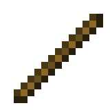

Expande a grelha de criação de 2x2 do inventário para 3x3, permitindo a criação da vasta maioria dos blocos e itens do jogo, incluindo ferramentas essenciais, armas e outros objetos que tornam o jogo progredir e sobreviver possível.

É fundamental no Minecraft por ser o "cabo" essencial para a criação de inúmeras ferramentas e itens, como picaretas, machados, enxadas, tochas de redstone, e componentes de armas e estruturas como cercas, placas e trilhos.

É o primeiro material que os jogadores obtêm para criar ferramentas, armas e a bancada de trabalho, que são essenciais para o início da sobrevivência e para o desenvolvimento do jogo.